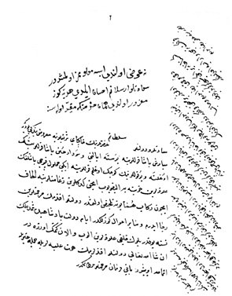

Belge 10: TKSA E.7002/19, veziriâzam ‘arzı
Belge 10
Özet:
1. Siyavuş Paşa Bosna’ya
2. ‘Arzı sunan veziriâzamın küçük oğluna iki boş kapıcıbaşı ulûfeleri hazineye konmuş, fakat gedikleri zeâmetine ilâve olunmak için telhîs
3. Bölük halkı ulûfelerini almışlardır ve gitmek üzeredirler.
Yorum:
1. Siyavuş Paşa’nın Bosna’ya tayini
2. Paşaların oğullarına maaş, veziriâzamın oğlu daha önce zeâmet sahibi, boş kalan kapıcıbaşının gedikleri ilâve edilmesini rica eder
3. Sipahiler, Girit’e gönderilmesi kararlaşan kargaşa çıkaran sipahiler olmalı.
Belge tarihine gelince Siyavuş Paşa’nın veziriâzamlıktan azli ve Bosna’ya atanması tarihi: Naîmâ (İpşirli yayını, s. 1368), Nisan 1656.